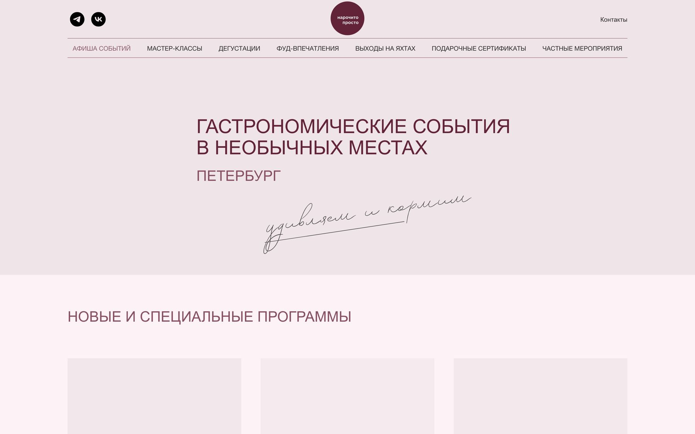
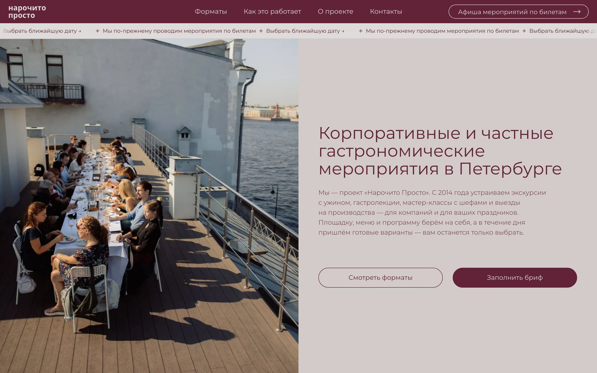
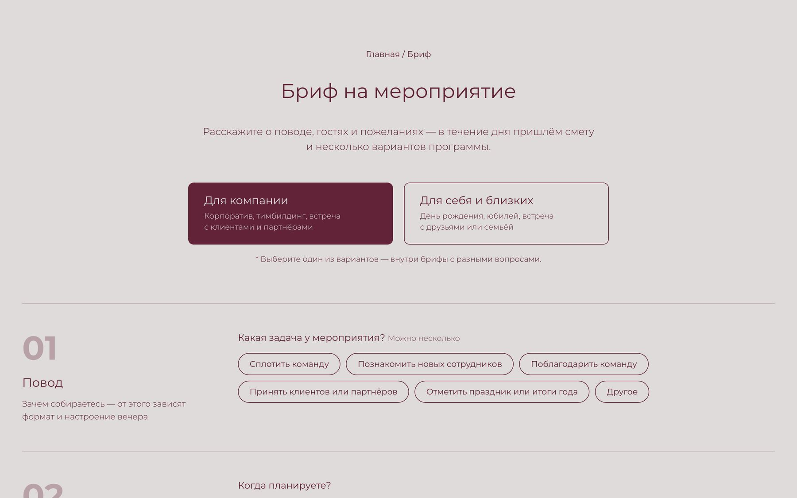

Гастрономические мероприятия в Петербурге с 2014 года: экскурсии с ужином, гастролекции, мастер-классы, дегустации. Сайт был ориентирован на продажу билетов на сборные события.
Сайт не подходил для продвижения в поиске и нейросетях, содержал устаревшую информацию и ошибки, формы заявок не работали. Нужно было переработать его в инструмент привлечения клиентов.
Через 2 недели ChatGPT начал рекомендовать проект по запросу «корпоративы СПб». Выросло количество запросов на частные мероприятия, стали поступать предложения о партнёрстве, а подарочный сертификат теперь можно купить прямо на сайте.

Старый сайт был ориентирован на продажу билетов на сборные мероприятия.

В центре — корпоративные и частные мероприятия, две понятные точки входа: форматы и бриф.

Пошаговый бриф: повод, дата и гости, формат, бюджет, контакты. Открыть бриф